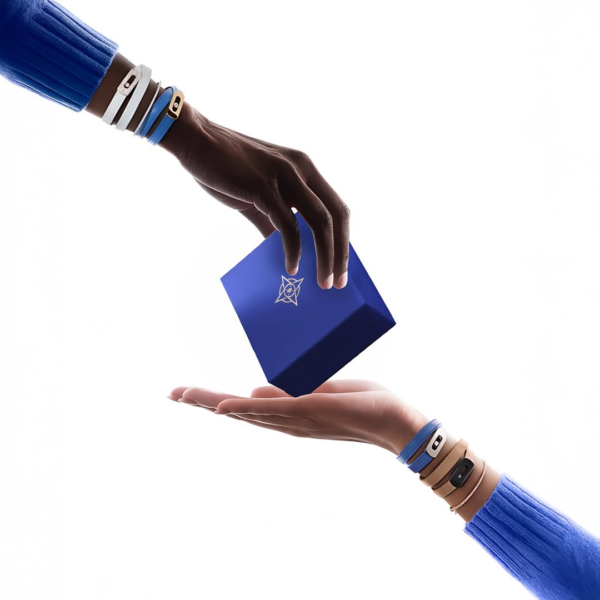

GPS Gems in Bangkok wanted to modernize their brand identity and increase organic engagement, but lacked a consistent content creation pipeline to stand out in the competitive jewelry market.
We implemented a complete brand identity overhaul. Leveraging our AI content pipeline, we generated high-quality, visually striking content that resonated with their target audience. This allowed for rapid, consistent posting without the overhead of traditional photo shoots.
Organic engagement grew by 3x across Instagram and Facebook. The new brand identity established GPS Gems as a modern, premium jeweler, driving both online interest and foot traffic.
